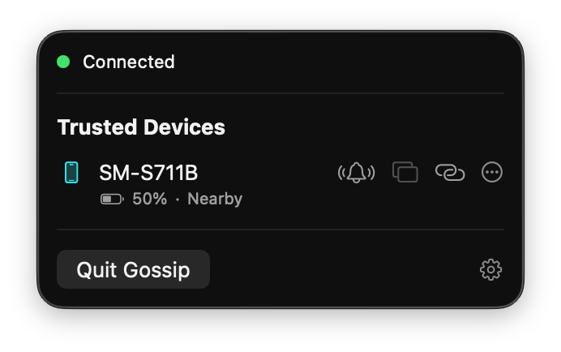
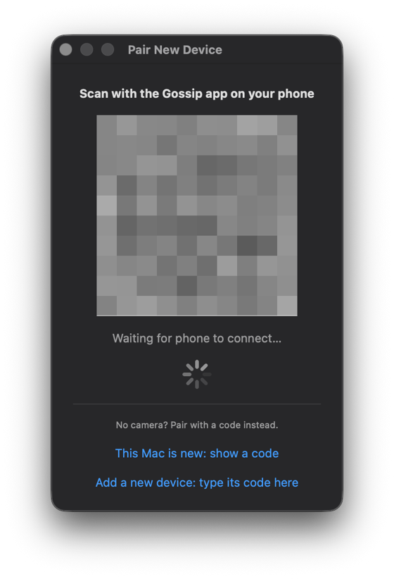
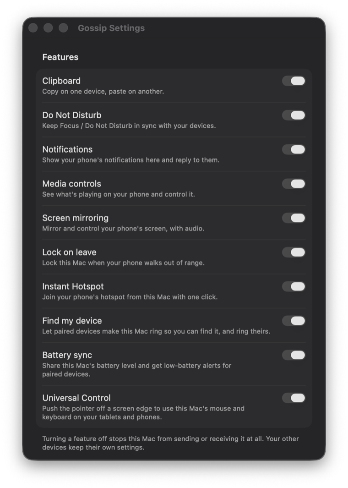
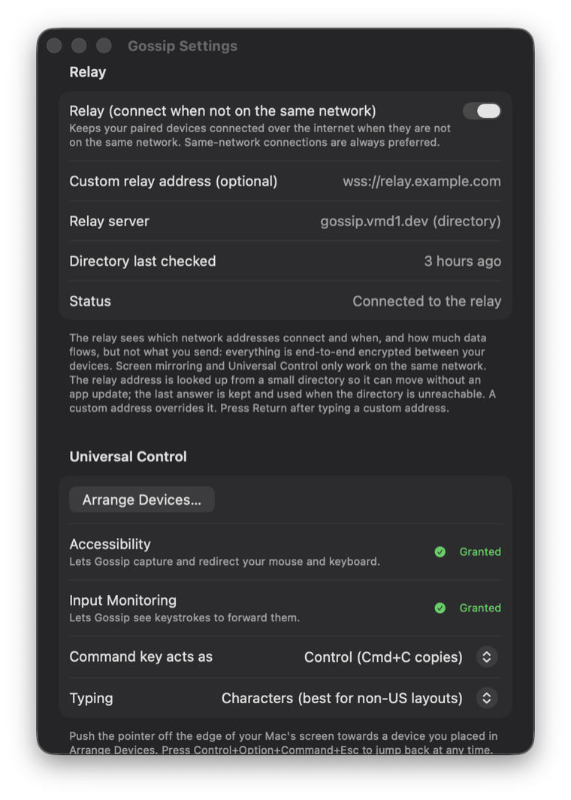
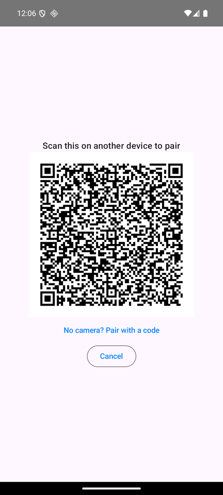
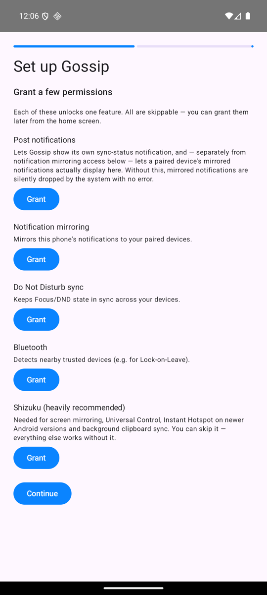
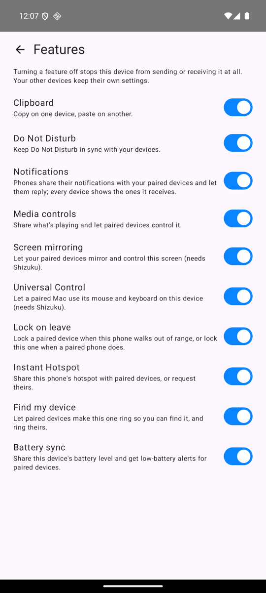
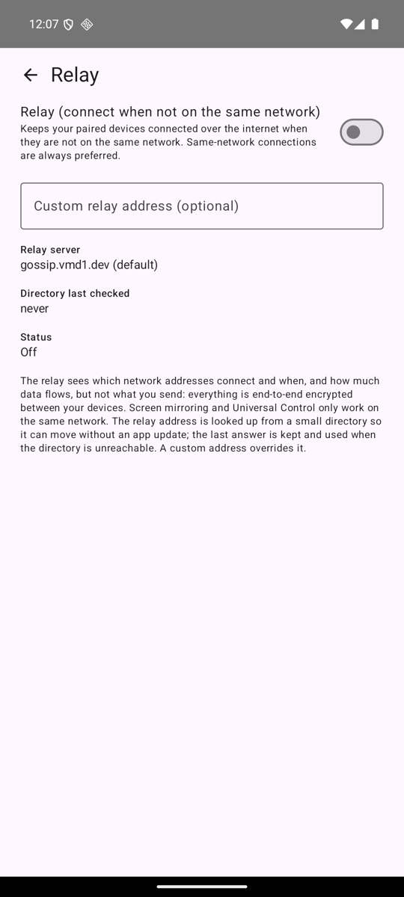

Mac ↔ Android continuity
Mac and Android, finally on speaking terms.
macOS 14+ (Apple Silicon build) · Android 10+ · Apache 2.0 license
What it does
Each feature has its own per-device switch in Settings. Features marked Shizuku need it on the Android device.
Universal Control
Push the Mac's cursor off a screen edge and keep going on your phone or tablet, with the Mac's mouse and keyboard. Mac → Android only.
Needs ShizukuScreen mirroring
Mirror and control an Android screen from the Mac, with audio.
Needs ShizukuNotification mirroring
See phone notifications on the Mac, reply inline, and dismiss in sync.
Clipboard sync
Copy on one device, paste on another — text and images.
Background reading needs ShizukuDo Not Disturb / Focus sync
Turn it on in one place and it follows everywhere. On the Mac this goes through the Shortcuts app.
Media remote
See what's playing and control playback on any device.
Instant Hotspot
Turn on your phone's hotspot from the Mac and join it automatically.
Android 16+ needs ShizukuLock on leave
Lock a Mac or tablet when your phone walks out of Bluetooth range.
Find my device
Make a paired device ring at full volume.
Battery sync
See every device's battery, with low-battery alerts.
Messages
A native Mac app for your phone's SMS conversations: contact names, replies and an instant-open cache. SMS only for now.
Android apps as Mac windows
Open a phone app as its own Mac window on a virtual display, leaving the phone's screen free.
Needs ShizukuPhone as trackpad and keyboard
Use your phone to move the Mac's cursor and type on it.
Clipboard history
Searchable, pinnable history of what you copied, kept on each device and never sent to the relay.
Android to Android mirroring
Mirror and control a phone or tablet from another Android device.
Needs ShizukuMulti-device trust
Pair two devices once and every device they already trust learns about the new one.
On the Mac
Gossip lives in the menu bar. Settings has a switch for every feature, plus the relay and Universal Control.

The menu bar: your devices, battery and quick actions
Pair with a QR code, or type a code if there is no camera
A switch for every feature
Relay and Universal Control settings
On Android
Pairing, permissions, per-feature switches and relay settings, as they appear on a phone.

Pair with a QR code or a typed code
Every permission is optional
A switch for every feature
The relay is off until you turn it on
How it works
Your devices talk directly to each other. There is no server in the middle.
Local first
- Devices find each other on the same local network and connect directly over TCP. That is always preferred.
- No account, no sign-in. Nothing is sent to the project's authors.
- Away from your home network, an optional relay keeps paired devices connected. You can also set a per-device fallback IP (for example a Tailscale address).
Trust and encryption
- Sessions use the Noise
IKhandshake, and messages are signed. - You pair by scanning a QR code that carries the public key of the device showing it, or by typing an 8-character code shown on the new device.
- Only a device you paired, or one a device you trust vouches for, is accepted; an unknown device must be confirmed on screen.
- Universal Control input and the screen-mirroring stream each use their own encrypted channel straight to the device, keyed through the Noise session.
Away from home: the relay
Off your home network, Gossip can connect your paired devices through a relay. It is off by default and you switch it on in Settings → Relay on each device.
How it behaves
- Used only when a paired device cannot be reached directly. On the same network your devices still talk straight to each other, and the connection moves back to the local network as soon as it is available.
- Most features keep working: notifications, clipboard, Do Not Disturb, media, battery and Find my device. Screen mirroring and Universal Control stay on the same network, because they are too heavy and latency-sensitive to relay, and Bluetooth features need the devices nearby.
- The relay address is looked up from a small public directory, so it can move without an app update. The last answer is kept, and a custom address in Settings overrides it. Relay settings follow your devices: change them on one and the others adopt them.
- Pairing a new device always happens on the same network.
What the relay can and cannot see
- Everything is end-to-end encrypted between your devices with the same Noise sessions and pinned keys as on the local network. The relay cannot read, change, replay or forge your data.
- It can see metadata: which network addresses connect, when, and how much data flows. It can also drop traffic or refuse service, and your devices fall back to the local network.
- It keeps no accounts, and its logs hold event names and counters only, with addresses shortened.
Run your own. The relay is open source and ships as a small multi-arch Docker image (ghcr.io/vmd1/gossip/relay). Point every device at it with the custom address in Settings → Relay. Relay setup · Threat model
Install and set up
Requirements: macOS 14 or newer and Android 10 or newer. Both devices need to be on the same local network to pair; the optional relay covers the rest.
-
Install the Mac app
Download
Gossip-Mac-AppleSilicon.zipfrom the latest release, unzip it and moveGossip.appto/Applications.The app is self-signed and not notarized, so the first launch is blocked by Gatekeeper: open System Settings → Privacy & Security and choose Open Anyway.
-
Install the Android app
Download
Gossip-Android-universal.apkfrom the same release and install it. Allow “install unknown apps” for the app you opened it with. It is a side-loaded build, not a Play Store release. -
Pair them
Mac: menu bar icon → Pair New Device… shows a QR code. Android: Pair New Device (or Scan a QR Code during setup), then confirm on both screens.
No camera? Choose Pair with a code: the new device shows an 8-character code, and you type it into a device that is already paired.
-
Set up Shizuku (heavily recommended)
The app works without it, but screen mirroring, Universal Control, Instant Hotspot on Android 16+ and background clipboard reading all need it. Shizuku must be restarted after a device reboot unless the device is rooted. Setting up Shizuku.
-
Grant permissions
Each device asks for permissions as you go. Each one unlocks one feature and all are skippable.
Keep every device on the same version. Always update the Mac app and all your Android devices to the same release so they work together.
Not tested: Intel Macs (the prebuilt app is Apple Silicon only; building from source is untested) and setups with multiple Mac displays are not covered by this site's claims.
Guides
The full documentation lives in the repository.
- Getting startedInstall, first run, permissions, pairing, optional setup.
- Setting up ShizukuWhat it is, which features need it, how to start it.
- Universal ControlSet up, shortcuts, limits.
- FAQCommon questions.
- TroubleshootingFixes for the usual problems.
- RelayRun your own relay: settings, Docker image, operations.
- Relay threat modelWhat the relay can and cannot do.
- Building and signingBuild from source, tests, signing, releases.